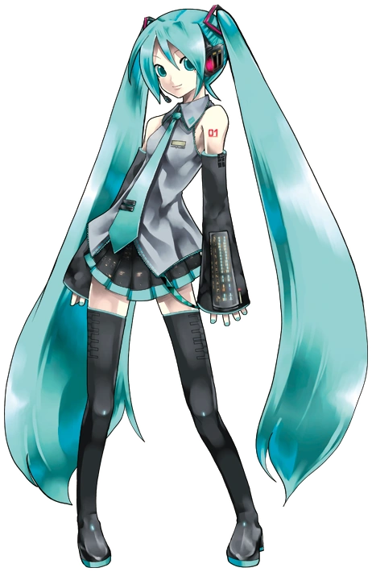

Nombre:Hatsune Miku
Desarrollador:Crypton Future Media, Inc.
Proovedor de voz:Saki Fujita
Fecha de lanzamiento:31 de agosto de 2007
Motor/Software:VOCALOID2, 3 y 4,Piapro Studio,Hatsune Miku NT, V6 AI
Idioma:japonés,inglés y chino mandarín
Género:Femenino
Edad:16 años (oficialmente permanente)
Nombres:Kagamine Len y Kagamine Rin
Desarrollador:Crypton Future Media
Proovedor de voz:Asami Shimoda (Ambos)
Fecha de lanzamiento:27 de diciembre de 2007
Motor/Software:VOCALOID 2 y 4,Piapro Studio NT,V4X,
Idioma:japonés y inglés
Género:Len(Masculino) y Rin(Femenino)
Edad:Ambos tienen 14 años
Nombre:Kaito
Desarrollador:Yamaha Corporation
Proovedor de voz:Naoto Fūga
Fecha de lanzamiento:17 de febrero de 2006.
Motor/Software:Vocaloid 1 y 3,KAITO SP
Idioma:japonés,inglés
Género:Masculino
Edad:No tiene edad confirmada
Nombre:Megurine Luka
Desarrollador/Empresa:Crypton Future Media
Proovedor de voz:Yuu Asakawa
Fecha de lanzamiento:30 de enero de 2009
Motor/Software:VOCALOID 2 y 4,Piapro Studio
Idioma:Japonés y inglés
Género:Femenino
Edad:20 años
Nombre:Meiko
Desarrollador/Empresa:Crypton Future Media
Proovedor de voz:Meiko Haigō
Fecha de lanzamiento:5 de noviembre de 2004
Motor/Software:V1 y 3,SP
Idioma:Japonés y inglés
Género:Femenino
Edad:no tiene edad oficial definida